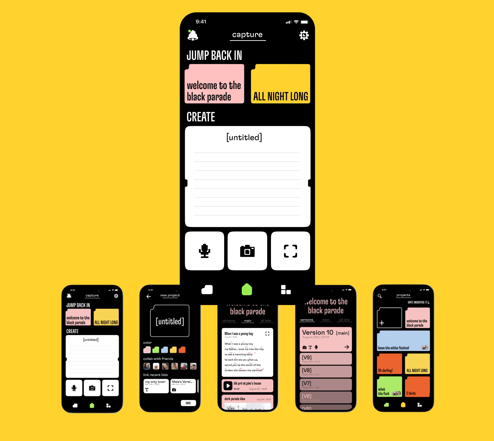
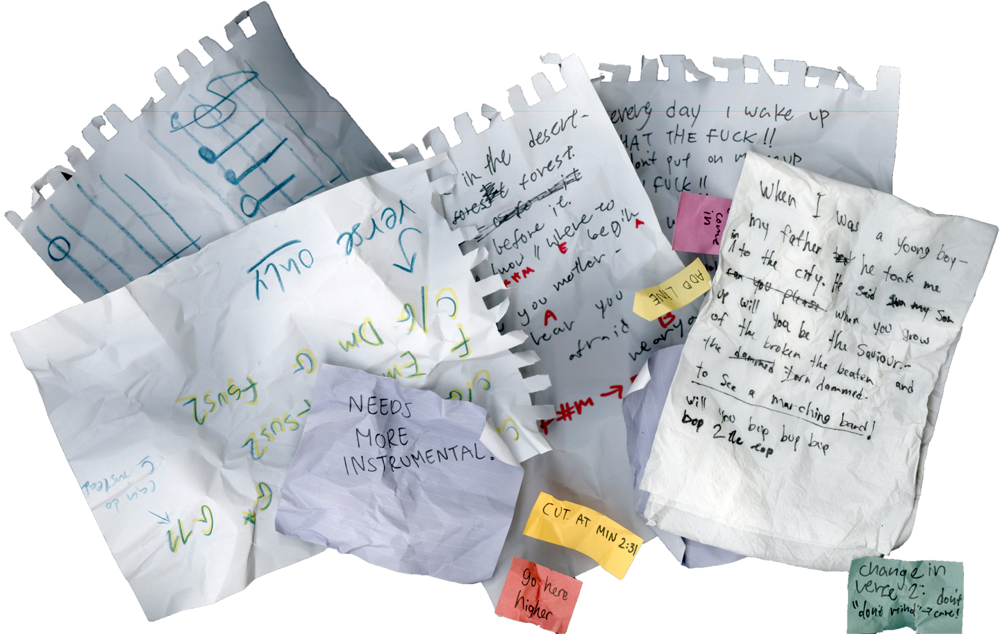

Contact
Cv
App Design
Student Project With Mia Gaon
Ux\Ui
2025
trac. is an app that keeps your songwriting organized while you keep creating. Write lyrics, capture ideas, record drafts, and build your projects without the usual mess in between.
When creating music, short or quick materials are created along the way. Musicians often keep these materials across many platforms.
Inaccessible materials, lost, ruined or forgotten, make the workflow more challenging.
Our Solution:
Write lyrics, capture ideas, record drafts and build your projects without the usual mess in between.
I designed this app end-to-end alongside a fellow designer. We shared responsibility across the process, from research and small-scale studies to ideation, prototyping, and defining the app’s visual language.
I took lead on key parts of the design process, in development of the visual language, designing the landing page, and building the final full-flow prototype.

